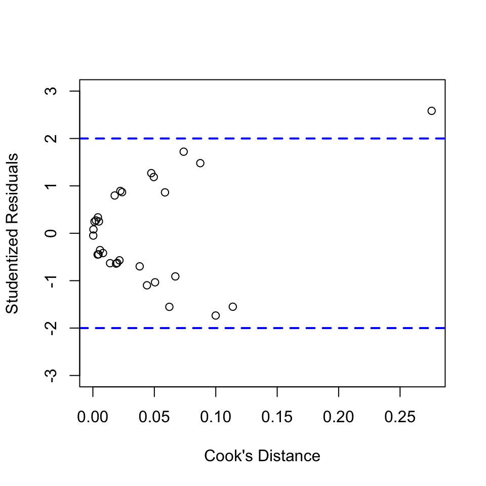

## response variable: PULSE
## predictor variables: RUN, SMOKE, HEIGHT, WEIGHT, PHYS1, PHYS2
mlrdata = read.table("./data/ex13-69.TXT", header = T, row.names = 1)
mlrdata$RUN = as.factor(mlrdata$RUN)
mlrdata$RUN = relevel(mlrdata$RUN, ref = "0")
mlrdata$SMOKE = as.factor(mlrdata$SMOKE)
mlrdata$SMOKE = relevel(mlrdata$SMOKE, ref="0")
mlrdata$PHYS1 = as.factor(mlrdata$PHYS1)
mlrdata$PHYS1 = relevel(mlrdata$PHYS1, ref="0")
mlrdata$PHYS2 = as.factor(mlrdata$PHYS2)
mlrdata$PHYS2 = relevel(mlrdata$PHYS2, ref="0")mlrfit = lm(PULSE~RUN+SMOKE+HEIGHT+WEIGHT+PHYS1+PHYS2, data=mlrdata)
summary(mlrfit)##
## Call:
## lm(formula = PULSE ~ RUN + SMOKE + HEIGHT + WEIGHT + PHYS1 +
## PHYS2, data = mlrdata)
##
## Residuals:
## Min 1Q Median 3Q Max
## -10.135 -3.875 -1.205 4.951 13.520
##
## Coefficients:
## Estimate Std. Error t value Pr(>|t|)
## (Intercept) -26.36485 36.53646 -0.722 0.477810
## RUN1 11.76733 2.67552 4.398 0.000209 ***
## SMOKE1 -7.02414 2.70636 -2.595 0.016175 *
## HEIGHT -0.02090 0.59180 -0.035 0.972128
## WEIGHT 0.05721 0.08294 0.690 0.497239
## PHYS11 13.55492 4.21419 3.216 0.003825 **
## PHYS21 7.89397 3.94366 2.002 0.057250 .
## ---
## Signif. codes: 0 '***' 0.001 '**' 0.01 '*' 0.05 '.' 0.1 ' ' 1
##
## Residual standard error: 6.817 on 23 degrees of freedom
## Multiple R-squared: 0.6363, Adjusted R-squared: 0.5414
## F-statistic: 6.706 on 6 and 23 DF, p-value: 0.0003324beta0 = coef(mlrfit)['(Intercept)']
betaRun1 = coef(mlrfit)['RUN1']
betaSmoke1 = coef(mlrfit)['SMOKE1']
betaHeight = coef(mlrfit)['HEIGHT']
betaWeight = coef(mlrfit)['WEIGHT']
betaPhys1 = coef(mlrfit)['PHYS11']
betaPhys2 = coef(mlrfit)['PHYS21']Full Model: PULSE = -26.3648455 + 11.7673345*(RUN=1) -7.0241413*(SMOKE=1) -0.0209031*(HEIGHT) + 0.0572127*(WEIGHT) + 13.5549219*(PHYS1) + 7.8939749*(PHYS2)
rstudentVal = rstudent(mlrfit)
cooksDisVal = cooks.distance(mlrfit)
plot(rstudentVal~cooksDisVal, xlab="Cook's Distance",
ylab="Studentized Residuals", ylim=c(-3,3))
abline(h=c(-2,2), lty="dashed", lwd=2, col="blue")
potentialInfObs = cooksDisVal[rstudentVal>2 | rstudentVal<(-2)]
potentialInfObs## 13
## 0.27569No influential observations exit. There is one observation that has large studentized residual. However, Cook’s D for this observation is 0.27569, which indicates small influence on the overall fit of the model.
stepwiseFit = step(mlrfit, direction = "both", test="F")## Start: AIC=121.19
## PULSE ~ RUN + SMOKE + HEIGHT + WEIGHT + PHYS1 + PHYS2
##
## Df Sum of Sq RSS AIC F value Pr(>F)
## - HEIGHT 1 0.06 1068.9 119.19 0.0012 0.9721283
## - WEIGHT 1 22.11 1090.9 119.81 0.4758 0.4972393
## <none> 1068.8 121.19
## - PHYS2 1 186.20 1255.0 124.01 4.0068 0.0572504 .
## - SMOKE 1 313.03 1381.8 126.90 6.7362 0.0161748 *
## - PHYS1 1 480.78 1549.6 130.34 10.3458 0.0038248 **
## - RUN 1 898.91 1967.7 137.50 19.3437 0.0002087 ***
## ---
## Signif. codes: 0 '***' 0.001 '**' 0.01 '*' 0.05 '.' 0.1 ' ' 1
##
## Step: AIC=119.19
## PULSE ~ RUN + SMOKE + WEIGHT + PHYS1 + PHYS2
##
## Df Sum of Sq RSS AIC F value Pr(>F)
## - WEIGHT 1 31.69 1100.6 118.07 0.7117 0.4072253
## <none> 1068.9 119.19
## + HEIGHT 1 0.06 1068.8 121.19 0.0012 0.9721283
## - PHYS2 1 191.59 1260.5 122.14 4.3019 0.0489647 *
## - SMOKE 1 312.99 1381.9 124.90 7.0278 0.0139885 *
## - PHYS1 1 480.73 1549.6 128.34 10.7941 0.0031208 **
## - RUN 1 903.56 1972.4 135.57 20.2881 0.0001465 ***
## ---
## Signif. codes: 0 '***' 0.001 '**' 0.01 '*' 0.05 '.' 0.1 ' ' 1
##
## Step: AIC=118.07
## PULSE ~ RUN + SMOKE + PHYS1 + PHYS2
##
## Df Sum of Sq RSS AIC F value Pr(>F)
## <none> 1100.6 118.07
## + WEIGHT 1 31.69 1068.9 119.19 0.7117 0.4072253
## + HEIGHT 1 9.64 1090.9 119.81 0.2121 0.6492453
## - PHYS2 1 173.38 1274.0 120.46 3.9383 0.0582760 .
## - SMOKE 1 307.96 1408.5 123.47 6.9955 0.0139189 *
## - PHYS1 1 466.73 1567.3 126.68 10.6020 0.0032378 **
## - RUN 1 881.25 1981.8 133.72 20.0179 0.0001456 ***
## ---
## Signif. codes: 0 '***' 0.001 '**' 0.01 '*' 0.05 '.' 0.1 ' ' 1Stepwise regression selection indicates that RUN, SMOKE, PHYS1 and PHYS2 are important variables to the model.
Choose the four important variables to re-fit the model.
finalMod = lm(PULSE~RUN+SMOKE+PHYS1+PHYS2, data=mlrdata)
summary(finalMod)##
## Call:
## lm(formula = PULSE ~ RUN + SMOKE + PHYS1 + PHYS2, data = mlrdata)
##
## Residuals:
## Min 1Q Median 3Q Max
## -11.1862 -4.1927 -0.5269 4.6858 12.9764
##
## Coefficients:
## Estimate Std. Error t value Pr(>|t|)
## (Intercept) -18.302 3.649 -5.016 3.58e-05 ***
## RUN1 11.132 2.488 4.474 0.000146 ***
## SMOKE1 -6.963 2.633 -2.645 0.013919 *
## PHYS11 13.325 4.092 3.256 0.003238 **
## PHYS21 7.451 3.754 1.985 0.058276 .
## ---
## Signif. codes: 0 '***' 0.001 '**' 0.01 '*' 0.05 '.' 0.1 ' ' 1
##
## Residual standard error: 6.635 on 25 degrees of freedom
## Multiple R-squared: 0.6255, Adjusted R-squared: 0.5656
## F-statistic: 10.44 on 4 and 25 DF, p-value: 4.109e-05beta0 = coef(finalMod)['(Intercept)']
betaRun1 = coef(finalMod)['RUN1']
betaSmoke1 = coef(finalMod)['SMOKE1']
betaPhys1 = coef(finalMod)['PHYS11']
betaPhys2 = coef(finalMod)['PHYS21']The result shows that only variable RUN, SMOKE, PHYS1 have significant effect on PULSE.
Final Model: PULSE = -18.3015205 + 11.1321293*(RUN=1) -6.9630238*(SMOKE=1) + 13.3251481*(PHYS1)